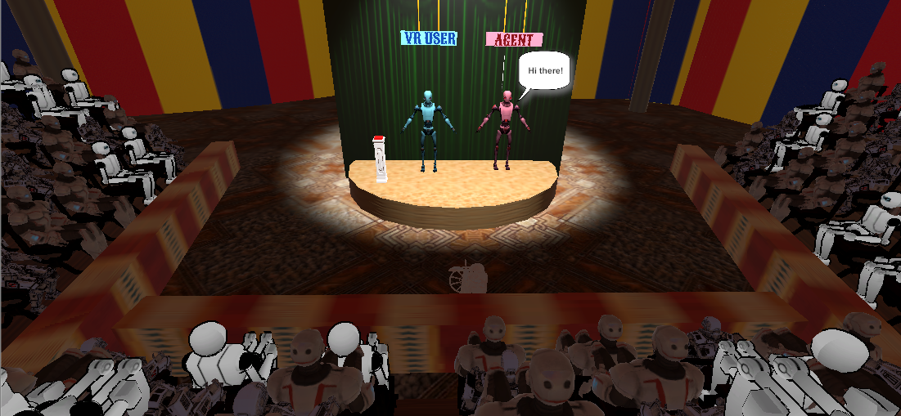

- < Work
- VR Interaction with AI
- Overview
- Research Questions
- Process
- My Role
- Prototyping
- Evaluation
- Learnings
VR INTERACTION WITH AI
Perform Improv theatre with an Artificially Intelligent partner in Virtual Reality
Overview
Improvisational theatre, often called Improv, is the form of theatre in which the performance is unplanned and unscripted. Performers of the Improv Theatre often play the props game - where you use abstract objects to mime comedic actions with them pretending them to be real-world objects. This project, titled 'The Robot Improv VR Circus', is a VR installation in which the VR user (who wears the headset) plays the props game with an AI partner on stage. Both the VR user and the partner are impersonated as robots in the experience. Each performer mimes actions on a turn-by turn basis. Every performer's actions are dependent on, and are a reaction to what their partner just performed during their latest turn. The research intent is to observe how the AI agent’s actions affect the VR user’s experience and vice versa.
Research Questions
Diversity
Do the actions of the AI partner improve VR users actions?
Creativity Evaluation
Where do different actions fall within a creative space in regards to novelty, surprise, and value?
BELIEVABILITY
How believable are the actions generated by the agent?
Explainability & Usability
How can we aid the VR user's understanding of the AI partner's actions?
Process

My Role
UX Lead, Game Developer
I'm the UX Lead and Unity Developer for this project. I conducted data collection and user feedback sessions to gather pain points. I also brainstormed solutions for major pain points, created sketches, conducted expert reviews, and built prototypes. I'm constantly implementing new features in Unity and am currently working on animation of the partner agent. I also design and conduct usability studies, and write IRB proposals.
Tools
Pen & Paper | Unity
Duration
4 Months
Sept 2018 - Present
Supervisors
Dr. Brian Magerko
Mikhail Jacob
Prototyping
I explored various ways - text, audio, video, pictures, and their combinations to convey the action that the agent is miming with the prop. After brainstorming, I narrowed down to 3 design ideas. I conducted usability tests with 6 participants to find which design alternative the users prefer.

To engage participants during the VR experience, I decided to gamify the interaction. I conducted expert reviews with 4 experts to identify an apt gamification strategy that would indulge the users. We finalized on the idea of the VR user hitting a VR buzzer after miming each action to maximize the number of mimed actions. Additionally, I improved the Audience user interface to make the UI understandable from the audience perspective.
Evaluation
I started to plan for the usability studies as I was developing the software in Unity. I made survey questionnaires, created interview and data collection scripts, and conducted pilot studies to prepare for the usability tests. My team and I also planned to conduct MTurk studies for massive data collection.
Learnings
I learned the User Centered Design methodology followed in Georgia Tech's HCI labs. Apart from UX Research and Design, I am also a software developer for this project. I wear multiple hats and have learned to think from each hat wearer's perspective.
I was guided by an amazing mentor, who taught me a great deal about computational creativity. More importantly, his humility, patience and kindness has inspired me to lead projects like he does.